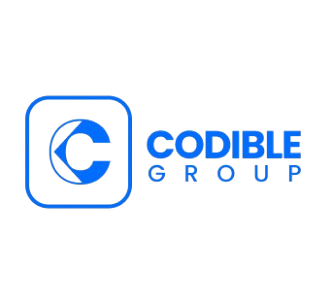
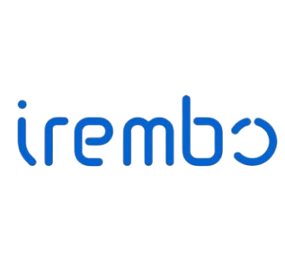
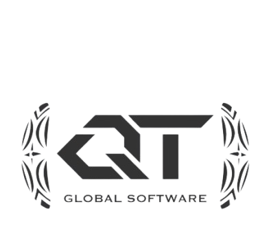
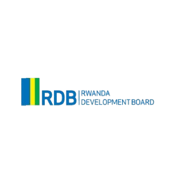

Who we are
Codebridge is a tech and software company in Rwanda committed to enhancing and improving the competitiveness and competence of its clients by enabling them to succeed through the power of information technology security. We have nine years of experience.
Our vision, mission & values
We bring clarity to strategy with a stacked system that shows how our mission, vision and values work together in every project.
We combine engineering, research and creative thinking to turn ambitious ideas into scalable digital products for business, HR, and government partners.
To be Rwanda's most trusted technology partner, bridging global best practice with local expertise.
Integrity craftsmanship and continuous learning guide every project we deliver.
Building the future, one step at a time
CodeBridge was founded in January 2018 with a simple mission: bridge the gap between complex technology and real-world business needs. Starting in a small co-working space in Kigali, our founding team of three engineers built their first client project within six months.
We launched our proprietary workflow automation platform, securing our first 50 enterprise clients. This year marked our shift from a service-based shop to a product-driven technology partner.
We expanded into three new markets and were recognized as a "Top Emerging Tech Partner." Our R&D division officially launched, focusing on AI-driven process optimization.
Today, CodeBridge powers over 300+ businesses with secure, scalable and future-ready software solutions. We continue to invest in open-source tools, developer education and sustainable tech practices.
Working with leading institutions that drive digital transformation across Rwanda and Africa.




We are a distributed team of designers, developers, and strategists united by a love for seamless digital experiences.
HABUMUGISHA Olivier
Olivier is the visionary driving the strategic direction and growth of Codebridge. With over a decade of experience navigating complex markets and scaling digital solutions, he is deeply committed to building technology that solves real-world challenges and empowers users.
MWENZI Teddy
Teddy oversees financial strategy and sustainable growth, ensuring Codebridge's resources are directed toward the projects with the greatest impact for clients and communities alike.
NDIZIHIWE Ismael
Ismael keeps every engagement running smoothly, coordinating teams and infrastructure so client delivery stays reliable, on schedule and to specification.
N. Kelly Robert
Kelly shapes how Codebridge tells its story, connecting the company's technical work with the businesses and communities it serves.